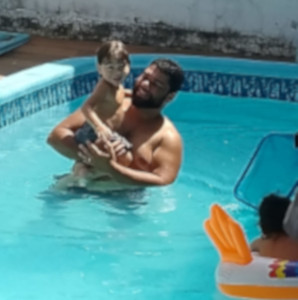
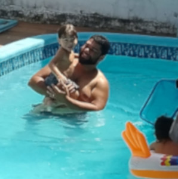
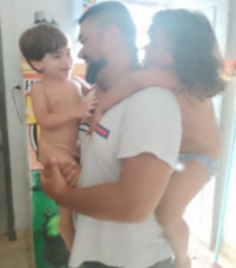
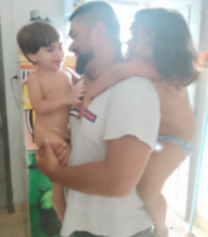

Ser pai é uma dadiva, é divíno, um verdadeiro privilégio concebido pelo pai maior nosso Deus. Ao mesmo tempo é uma enorme responabilidade, para conseguir fazer um filho ou filha serem dignos e preparados para viverem em um mundo por muitas vezes cruel, onde vão precisar serem independentes de seus pais para viverem em mundo dificil e construirem sua história, seus amigos, aliados, seus vinculos, sua própria Família, construirem seu próprio caminho andando com suas próprias pernas e repetirem o ciclo com seus filhos, Ciclo da vida.
Do que protege-los?
Essa foto ilustra algo que está sendo recorrente hoje em dia, que é o fato de ideologias de um espctro politico a esquerda fazendo politicas identitarias para doutrinar a mente de seus filhos com ideologia de gênero, pautas lgbt, transformando pais em opressores jogando os filhos contra os pais, por uma extrategia politica progressita eles doutrinam a mente pra transformar seus filhos em futuras massa de manobra para os usarem para se perpetuarem no poder e para isso usam tudo ao seu alcance de forma suja, podre, traiçoeira para destruir toda moral judaico-cristã. O socialismo quer destruir sua liberdade de expressão para que naão tenha voz de expor essas atrocidades, querem destruir a familia, a visão de familia que as pessoas tem e assim oprimindo pelo medo para que ninguem se volte contra eles, e por fim a economia, para que uma nação em colapso economico seja escrava do estado, refem do poder sem poder fazer nada. E tudo vem, tudo começa da doutrinação de seus filhos protejam seus desse mal, os eduquem, ensinem e os preparem para a vida para serem independentes, mostrem o caminho de Deus, da verdade e sempre respeitando a tudo e todos.
Como ensinar?
Um pai ele tem o dever de poteger, mais também ensinar seus flhos e educa-los para terem e serem pessoas de caratér.
Requisitos de pai para ensinar!
Autoridade
Sabedoria
Confiança
paciência
Companheirismo
exemplo de como ensinar!
O video abaixo do psicoterapeuta Leo Fraiman que é especialista na area infantil e adolescência mostra um problema dos pais atualmente, e tentar mostrar como fazer, no caso como agir para não tornar seus filhos fracos, submissos, dependentes, infantilizados e afeminados.
Leo Fraiman, clique e saiba tudo sobre esse renomado psicoterapeuta que fez parte do comitê Mundial de Educação para autonomia e conferencista da ONU.


 

 
